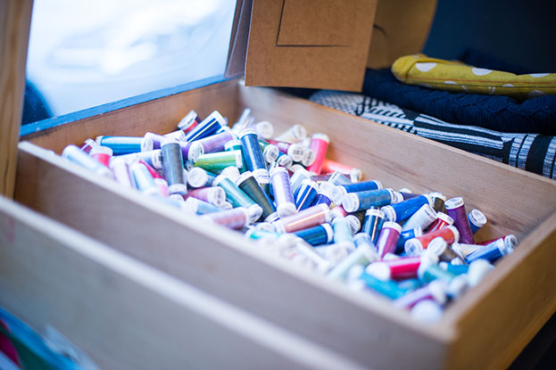
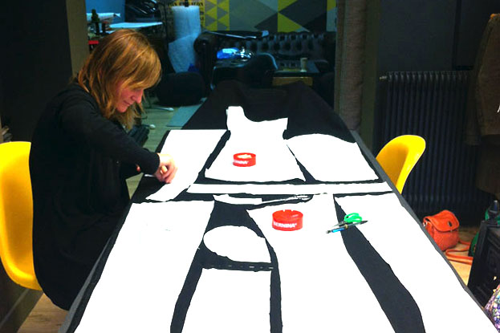
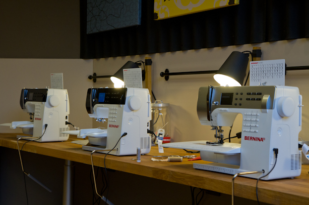
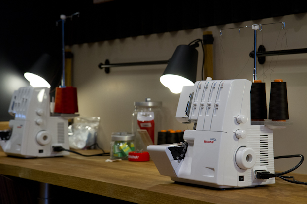
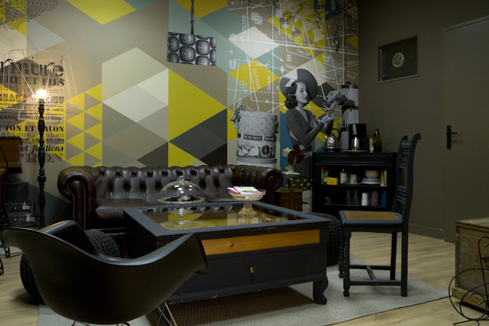

Espace de vente

mon Bar à Couture vous propose à la vente :
des tissus,
des fournitures,
de la mercerie,
des patrons
et vous invite également à aller jusqu’au bout de votre créativité en apportant vos matières premières (achat, stock et récup’).
Espace de préparation

Une fois votre projet défini, mon Bar à Couture met à votre disposition les outils de coupe et de traçage pour :
relever le patron et ses éléments techniques,
établir un plan de coupe,
découper les pièces de votre modèle selon la nomenclature.
Espace de montage


Profitez d’un parc de machines performant pour confectionner vos modèles sans aucune contrainte technique. mon Bar à Couture met à votre disposition :
5 machines à coudre :
point de broderie fantaisie (motif et alphabet),
boutonnière automatique,
aide enfile-aiguille,
fonctionnement avec ou sans pédale.
Deux surjeteuses raseuses :
2, 3 ou 4 fils,
point rouloté.
Une recouvreuse:
4 fils (finition maille).
Espace pause créative

Cet espace vous permet :
de consulter des ouvrages spécialisés pour trouver l’inspiration,
de faire du troc (tissus, patrons),
d’échanger vos trucs et astuces,
de réaliser des modèles ne nécessitant pas la machine à coudre (bijoux, tricot, crochet).
… le tout autour d’un thé ou d’un café !